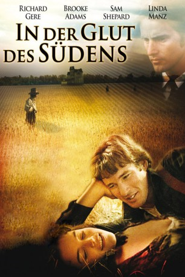

#2157 In der Glut des Südens
Alternativ: Days of Heaven
Auszeichnungen: 1 Oscars gewonnen für 3 Oscars nominiert 1 BAFTA-Awards gewonnen
 
 IMDB-Wertung: 7.9 / 10
IMDB-Wertung: 7.9 / 10  Metascore: 93
Metascore: 93 
Bill und seine Freundin Abby finden Arbeit auf einer Farm in Texas. Der reiche, todkranke Farmer verliebt sich in Abby. Bill möchte, dass sie ihn heiratet, damit sie der Armut entkommen. Doch der Farmer stirbt nicht, und Bills Eifersucht wird unerträglich ...
Jahr: 1978
Dauer: 94 Minuten
FSK: 12
Land: USA Studio: Paramount PicturesTonspuren: DTS - ,
Untertitel: Englisch,
Auflösung: 1080p (1920x1080) Größe: 8263 MB
Genre: Drama, Liebe
Regisseur: Terrence Malick
Drehbuch: Terrence Malick
Soundtrack: Ennio Morricone
Darsteller:
 Richard Gere als Bill
Richard Gere als Bill Brooke Adams als Abby
Brooke Adams als Abby Sam Shepard als The Farmer
Sam Shepard als The Farmer Robert J. Wilke als The Farm Foreman
Robert J. Wilke als The Farm Foreman Stuart Margolin als Mill Foreman
Stuart Margolin als Mill Foreman Richard Libertini als Vaudeville Leader
Richard Libertini als Vaudeville Leader- King Cole als Farm Worker
- Linda Manz als Linda
- Jackie Shultis als Linda's Friend
 Timothy Scott als Harvest Hand
Timothy Scott als Harvest Hand- Gene Bell als Dancer
- Doug Kershaw als Fiddler
- Frenchie Lemond als Vaudeville Wrestler
- Sahbra Markus als Vaudeville Dancer
- Bob Wilson als Accountant
- Muriel Jolliffe als Headmistress
- John Wilkinson als Preacher
Datei: X:\1978\In der Glut des Südens (1978, FSK12, 1920x1080).mkv seit 09.10.2015
Festplatte: HD 1971-1979
 Es gibt insgesamt 31 Filme in der Gruppe '1978'
Es gibt insgesamt 31 Filme in der Gruppe '1978'